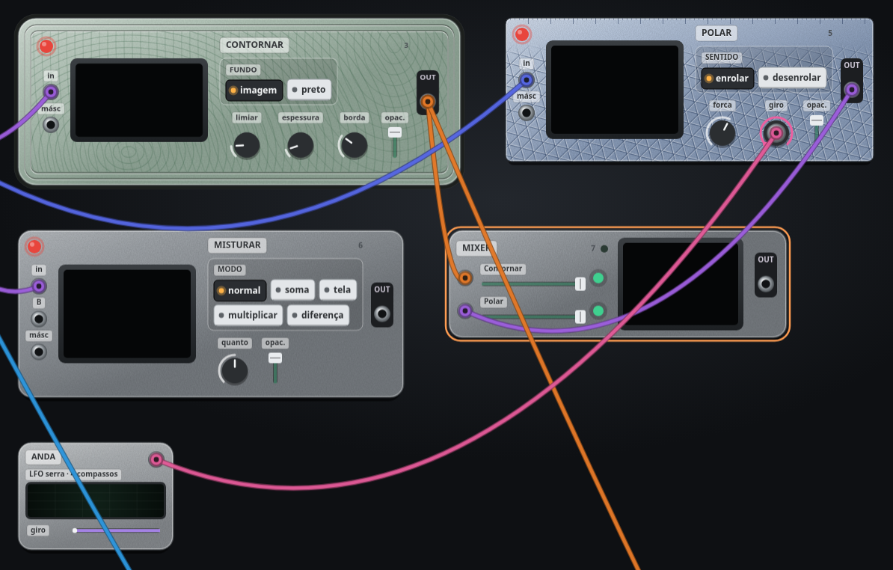

Um sintetizador modular de som é uma caixa cheia de módulos pequenos — um faz uma onda, outro filtra, outro
muda o volume — ligados por cabos. Nenhum módulo sozinho é "a música"; a música sai das ligações.
O PRISMA é a mesma ideia aplicada à imagem. Cada módulo faz uma coisa só com a imagem (girar, desfocar,
mudar a cor, desenhar listras…), e você liga um no outro com cabos. A câmera, um vídeo ou a tela do computador
entram de um lado; a imagem transformada sai do outro, no projetor, no telão ou numa webcam virtual.
Porque é assim que se aprende e se improvisa melhor. Um efeito "pronto" com 30 controles faz uma coisa
bonita e só. Dez peças pequenas que encaixam entre si fazem milhares de coisas que ninguém planejou — e cada peça
continua fácil de entender. É a mesma lógica dos sintetizadores modulares de vídeo dos anos 70 (Sandin Image
Processor, por exemplo), que foram desenhados justamente para que tudo pudesse ligar em tudo.
O projeto nasceu como estudo: aprender síntese de som (no SuperCollider) e síntese de imagem (em GLSL, a
linguagem da placa de vídeo) com o mesmo vocabulário. Por isso a página inteira vai comparar as duas coisas.
ideia
no som
na imagem (PRISMA)
oscilador
uma onda que sobe e desce no tempo
um padrão que se repete no espaço (listras, ondas, rampas)
frequência
quantas vezes a onda repete por segundo (o grave/agudo)
quantas vezes o padrão repete na tela (listras finas ou grossas)
fase
em que ponto da onda você começa
o deslocamento do padrão (as listras "andam")
amplitude
o volume
o brilho
ruído
chiado
granulado, nuvens, texturas
filtro
tira grave ou agudo
desfoca (tira detalhe fino) ou afia (realça detalhe fino)
feedback
o som volta para a entrada (eco, microfonia)
a imagem volta para a entrada (rastros, túneis infinitos)
amostragem
amostras por segundo
pixels na tela e quadros por segundo
2 · O que é uma imagem para o computador
Uma imagem é uma grade de pontinhos — os pixels. Uma tela Full HD tem 1920 × 1080 ≈ 2 milhões deles. Cada
pixel guarda quatro números:
R, G, B — quanto de vermelho, verde e azul. Misturando os três sai qualquer cor.
A (alfa) — o quanto aquele pixel "existe": 1 = cobre o que está atrás, 0 = transparente. É o que permite
que um módulo desenhe só umas linhas e o resto continue vazio.
Para o PRISMA, todo número vai de 0 a 1: 0 = nada (preto, transparente), 1 = cheio (branco, opaco).
Vídeo é só isso repetido: uma imagem nova a cada fração de segundo. O PRISMA desenha 60 imagens por segundo
(60 fps). Cada uma tem cerca de 16 milissegundos para ficar pronta.
O som digital também é uma fila de números: 48 mil por segundo, cada um dizendo onde a caixa de som deve
estar naquele instante. O som é um número que muda no tempo; a imagem é um mapa de números que muda
quadro a quadro. Tudo que se faz com um, dá para fazer com o outro.
3 · Por que tudo roda na placa de vídeo
2 milhões de pixels × 60 quadros = 120 milhões de cálculos de cor por segundo, para cada módulo. O processador
comum (CPU) faz as contas uma de cada vez, rápido, mas uma de cada vez. A placa de vídeo (GPU) tem milhares de
calculadoras pequenas trabalhando ao mesmo tempo.
Por isso cada módulo do PRISMA é um shader: um programinha curto que responde a uma única pergunta — "qual
a cor deste pixel?". A GPU roda essa mesma pergunta para todos os pixels de uma vez.
Um shader não sabe o que os vizinhos estão fazendo; ele só pode ler imagens que já existem
(a câmera, o resultado do módulo anterior). Essa limitação é o que deixa tudo rápido — e é por isso que os módulos
são pensados como "entra imagem, sai imagem": encaixam naturalmente um depois do outro.
por dentro: o que um módulo escreve, de verdade
O módulo Matiz (gira as cores) é, na essência, três linhas: ler a cor do pixel na entrada, girar o tom dela
pelo valor do knob, devolver. O módulo Listras nem lê nada: calcula seno(posição × quantidade + tempo)
e isso já é uma listra andando. A posição do pixel faz o papel que o tempo tem num oscilador de som.
A CPU fica com o que não é pixel: ouvir o som, abrir a câmera, decidir o ritmo, falar com o painel. Ela entrega
para a GPU só alguns números por quadro (o "grave agora", a "fase da batida", o valor de cada knob).
4 · O caminho do sinal, do começo ao fim
A cada quadro, a imagem percorre este caminho:
Fontes trazem imagem de fora: webcam, arquivo de vídeo, foto, a tela do computador ou uma janela.
Módulos transformam essa imagem — ou criam imagem do nada (ruído, listras, fluido).
Mixer junta várias imagens em camadas, como num programa de edição.
Saída é o que vai para uma tela. Ali passam os ajustes finais: cor geral, brilho mestre e a proteção contra
flashes.
Em paralelo, o som vira números (grave, agudo, batida, tom) e o movimento usa esses números para mexer
nos knobs dos módulos. A linha tracejada: alguns módulos também podem usar o som diretamente.
Separar "o que transforma a imagem" (módulos) de "o que faz mexer" (movimento) é a decisão mais
importante do projeto. Um módulo de giro não precisa saber nada de música; ele só gira o quanto o knob mandar. Quem
liga o giro ao bumbo é o movimento. Assim, qualquer movimento serve em qualquer knob de qualquer módulo — e você
não precisa de um "giro que pulsa", um "giro que segue o grave", um "giro lento"… é um giro só.
5 · Os módulos (átomos)

Módulos no canvas: cada um tem uma telinha (o que ele está produzindo), knobs, entradas à esquerda e
saída à direita. Embaixo, um controlador ("Anda") girando o knob giro do Polar.
No código cada módulo se chama átomo: a menor peça que ainda faz algo útil. Todos seguem as mesmas
regras, e é isso que garante que qualquer um encaixe em qualquer outro.
As famílias
A cor do gabinete mostra a família. Cada família responde a um tipo de pergunta:
Uma família por tipo de pergunta mantém cada peça honesta. "Contornar" desenha linhas brancas — ele
não tem knob de cor. Se você quer linhas vermelhas, liga um Tingir depois. Parece mais trabalho, mas é o que deixa
você trocar a cor das linhas por um arco-íris que segue a música sem que ninguém tenha previsto isso.
Knobs: poucos, de 0 a 1, com um "nada" previsível
No máximo 3 knobs por módulo. O primeiro é o principal (o "quanto").
Todo knob vai de 0 a 1. Assim qualquer movimento cabe em qualquer knob: um "sobe e desce" que funciona no
brilho funciona igualzinho no giro.
O knob principal em 0 = o módulo não faz nada (a imagem passa intacta). Alguns knobs têm dois lados
(girar para a esquerda ou para a direita): neles, o meio é o "nada".
Alguns controles são escolhas em vez de knobs: teclas (imagem / preto), uma régua com entalhes ou um
seletor giratório quando há muitas opções.
O "nada previsível" é o que faz movimento soar musical. Se o knob de força pulsa do 0 até 0,8 no
bumbo, o efeito aparece e some na batida. Se o 0 não fosse "nada", o efeito nunca sumiria de verdade e o pulso
viraria uma tremedeira.
Filtrar ou desenhar por cima
Existem dois jeitos de um módulo entrar na corrente:
Filtro (troca) — a saída dele substitui a entrada. A opacidade do módulo diz quanto da imagem
original volta (é o "misturar com o original" dos editores de vídeo). Ex.: Desfocar, Matiz, Rodar.
Desenho (por cima) — ele desenha sobre a entrada, como uma folha transparente. A opacidade é o
quanto o desenho aparece. Ex.: Listras, Contornar, Pontos.
Módulos com memória
Quase todo módulo esquece tudo de um quadro para o outro. Alguns precisam lembrar: o Fluido (tinta que
escorre), a Reação (padrões tipo coral ou pele de animal que crescem sozinhos), o Feedback (rastros).
Esses guardam uma imagem secreta — o estado — e a atualizam um passinho por vez.
Esses passos acontecem num ritmo fixo (60 por segundo de relógio), não "um por quadro". Se o
computador engasgar e desenhar menos quadros, a tinta não escorre mais devagar — ela escorre igual e só mostra menos
fotos dela. Sem isso, o mesmo set ficaria diferente num notebook e num computador forte.
Um evento da música pode semear (jogar tinta nova) ou limpar o estado. "No drop o coral apaga e
cresce de novo" sai sem programar nada.
Máscaras: onde o efeito vale
Uma máscara é uma imagem em preto e branco que diz "aqui sim, aqui não". Branco = o efeito aparece; preto = passa a
imagem original. Todo módulo tem uma entrada másc. Algumas máscaras:
Assunto / Fundo — separa a pessoa do cenário (uma rede neural pequena recorta quem está na frente).
Rosto, Olhos, Corpo, Mãos, Objeto — seguem o que a câmera encontra (veja como o PRISMA enxerga).
Brilho, Luma, Cor — só as partes claras, ou só uma cor.
Exemplo: Fonte → Desfocar com máscara Fundo = desfoca o cenário e deixa a pessoa nítida, como o modo retrato
do celular.
6 · Cabos: o que corre dentro deles
Dentro de todo cabo corre a mesma coisa: uma imagem colorida com transparência. Não há tipos diferentes de
cabo que "não encaixam" — qualquer saída liga em qualquer entrada.
Num sintetizador modular de som (Eurorack), tudo é tensão elétrica: o cabo que leva som também leva
controle, e é daí que saem os sons inesperados. Aqui é igual: um módulo pode usar a imagem do outro como cor, como
quantidade (o quão claro é), como transparência ou até como direção (para onde empurrar). Quem decide como ler
é quem recebe.
As entradas de um módulo
in — a imagem principal, que ele transforma.
B — uma segunda imagem, para quem precisa de duas (Misturar, Deslocar: "quem empurra").
másc — a máscara (onde ele vale).
knobs com jack — o centro de cada knob é um jack. Um cabo de controlador ligado ali gira o knob sozinho
(veja movimento).
Uma entrada aceita um cabo; uma saída pode alimentar quantos você quiser.
Corrente: um sobre o outro
Quando um módulo lê outro em fila (Fonte → Contornar → Vinheta), o segundo age só no que o primeiro fez — a
"marca" dele. No exemplo, a vinheta escurece as linhas do contorno, não a imagem da câmera por trás.
É assim que se pensa em camadas: "quero essas linhas mais escuras nas bordas". Se a Vinheta agisse em
tudo, ela apagaria também a câmera, que você nem pediu para mexer. Quer o efeito na imagem inteira? Puxe um cabo
paralelo direto da fonte.
Laço = feedback
Se você fecha um círculo (a saída de um módulo volta para a entrada de um anterior), o PRISMA não trava: o cabo que
fecha o laço entrega o quadro anterior. Isso é feedback de vídeo — o mesmo de apontar uma câmera para a própria
TV. Coloque um Rodar no laço e sai uma espiral; um Desfocar, fumaça.
É o eco: o som de agora volta um pouquinho atrasado, misturado ao novo, e vai se repetindo cada vez
mais fraco.
7 · Mixer e saída: juntar camadas
O mixer tem 2, 4 ou 8 entradas. Cada entrada é uma camada com seu próprio fader de opacidade; a de cima fica
na frente. A saída é a ponta final, uma por tela do palco.
Como duas imagens se combinam é o modo de mistura:
modo
o que faz
quando usar
normal
a de cima cobre a de baixo
o padrão
soma
soma as luzes: tudo clareia
brilho, fogo, luzes que se encontram
tela
clareia, mas sem estourar no branco
dupla exposição suave
multiplicar
escurece: só passa o que é claro nas duas
sombra, recortar com textura
diferença
mostra onde as duas são diferentes
psicodélico; detectar o que mexeu
Depois do mixer, a saída aplica, nesta ordem: o ajuste de cor da cena, a transição (se estiver trocando de cena), o
ajuste de cor geral, o fader EFEITOS (quanto de todos os efeitos aparece) e o master (brilho final).
O fader EFEITOS existe para o momento do show em que você quer "voltar para a imagem limpa" sem desligar
módulo por módulo. O master fica por último porque é o freio de mão: o que estiver antes, ele manda.
8 · Movimento: o que faz os knobs andarem sozinhos
Um knob parado dá uma imagem parada. Para a imagem dançar, alguém precisa girar o knob — e no show as suas mãos não
dão conta de 20 knobs ao mesmo tempo. Quem gira é o controlador: aquele módulo prateado com uma telinha de
osciloscópio, que mostra a onda que ele está produzindo.
Três tipos de coisa circulam
Imagem — o que corre nos cabos normais.
Sinal — um único número de 0 a 1 que muda com o tempo: o grave da música, uma onda lenta, o brilho médio de
um módulo, a posição de um rosto.
Evento — um "agora!": o bumbo bateu, começou um compasso, chegou o drop, um rosto apareceu.
Os três modos de um controlador
modo
como anda
exemplo
loop
repete sozinho uma forma (seno, serra, degraus, acaso), no tempo da música
respira: sobe e desce a cada 4 batidas
disparo
um evento dispara um "soco" que sobe rápido e cai devagar
pulsa: a cada bumbo, o brilho dá um salto e volta
segue
acompanha um sinal, suavizado
grave: o zoom segue o sub-grave da música
É o LFO (loop), o envelope disparado por gate (disparo) e o seguidor de envoltória (segue) de qualquer
sintetizador.
A faixa "de / até"
O controlador produz 0 a 1; cada knob ligado a ele escolhe a sua faixa: de onde até onde ele vai. Pulsar o
brilho de 0,5 até 0,8 é sutil; de 0 até 1, violento. Se "de" for maior que "até", o movimento se inverte (o bumbo
abaixa em vez de subir — o famoso ducking). Um mesmo controlador pode mover vários knobs, cada um na sua faixa.
Separar a forma do movimento (o controlador) do tamanho dele (a faixa no knob) deixa você reaproveitar
um único "pulso no bumbo" em cinco lugares — cada um reagindo na medida certa — e trocar a forma de todos de uma vez.
Condições e grade
Um evento pode ter condição: "só no 1º bumbo de cada 4", "50% das vezes". Isso quebra a repetição sem
perder o ritmo.
Ações que trocam algo (ligar/desligar um módulo, mudar de cena) esperam a grade: a próxima batida,
compasso ou frase. Mesmo que você aperte um pouco antes, a troca cai no tempo.
Knobs, opacidades e faders mexidos à mão passam por uma suavização curta, para não dar degrau. Os
movimentos ligados ao som não — senão o pulso chegaria atrasado.
9 · Como o PRISMA ouve a música
O PRISMA escuta o som que está tocando no computador (ou uma entrada de áudio) e o transforma em sinais e eventos.
Faixas: do grave ao agudo
Pedaço por pedaço, o som passa por uma FFT — uma conta que separa um som misturado nas frequências que o
compõem, como um prisma separa a luz branca em cores (daí o nome). O resultado é agrupado em 8 faixas: sub-grave,
grave-médio, médio, médio-agudo, presença, agudo, brilho e ar. Cada uma vira um sinal de 0 a 1.
Cada faixa é medida em relação ao próprio máximo recente, não ao volume geral. O grave é sempre
muito mais forte que o agudo; sem isso, o grave estaria sempre no talo e o agudo nunca sairia do zero. Mas há um piso:
se uma faixa ficar em silêncio por muito tempo, ela não se "amplifica" até acender com o próprio chiado.
Batida e andamento (BPM)
A cada pedaço de som, o PRISMA mede quanto o espectro mudou em relação ao anterior. Uma batida é uma
mudança brusca — um pico nessa medida.
Para achar o andamento, ele procura de quanto em quanto tempo esses picos se repetem (comparando a série
com ela mesma deslocada — a autocorrelação). O deslocamento que mais "bate" é o intervalo entre batidas.
Um relógio interno (como um metrônomo que se corrige sozinho) segue a música e diz a fase: em que ponto da
batida, do compasso e da frase estamos.
Daí saem os eventos: batida, compasso, frase, bumbo, golpe (qualquer ataque
forte). Se o detector errar, você corrige no painel: TAP (bater o tempo), dobrar/dividir o BPM, marcar o "1".
O movimento usa a fase do relógio, não os picos crus. Por isso um "respira a cada 4 batidas"
continua no tempo mesmo num trecho sem bumbo — o relógio segue andando como um baterista que não para quando a banda
dá uma pausa. Se não houver som por 2 compassos, os eventos de bumbo passam a cair na batida do relógio.
Seções da música
Comparando a energia dos últimos segundos com a do último minuto, o PRISMA classifica o momento: intro,
sobe, drop ou pausa. A decisão só é tomada no começo de uma frase, para não ficar trocando no meio.
Um movimento pode ser disparado por "chegou o drop".
Tom e cor
O PRISMA também estima o tom da música (dó maior, lá menor…) contando quanto cada uma das 12 notas aparece e
comparando com o perfil típico de cada tom. O tom vira uma cor — pelo círculo das quintas (tons vizinhos têm cores
vizinhas) ou pela tabela de cores do compositor Scriabin.
10 · Como o PRISMA enxerga (rosto, corpo, recorte)
Redes neurais pequenas, que rodam no próprio computador (sem internet), olham a imagem das fontes:
Rosto e olhos — onde está cada rosto; o contorno das pálpebras.
Assunto — o recorte de quem está em primeiro plano.
Isso vira duas coisas: máscaras (o efeito só no rosto, só nas mãos) e sinais (a altura da mão
direita controla o zoom; um rosto que aparece é um evento).
Essas redes são pesadas para a CPU. Elas só rodam enquanto algum módulo realmente pede o resultado — e
cada uma num trabalho separado, para nunca atrasar o desenho dos 60 quadros. Se a rede demora, a imagem continua
lisa e a máscara só se atualiza um pouco menos vezes.
11 · Cenas e transições
Uma cena é uma foto de tudo: quais módulos existem, como estão ligados, onde estão os knobs e os movimentos.
O set é a lista de cenas do show. A cena ativa é salva sozinha a cada mudança.
Próxima cena: você escolhe a próxima e vê uma prévia dela enquanto a atual ainda está no ar. As fontes da
próxima já são abertas antes, para a troca não engasgar.
Transição viva: na troca, as duas cenas continuam rodando ao mesmo tempo, com a música, enquanto uma
dá lugar à outra (dissolver, passar pelo preto, cortina). Um efeito que existe nas duas cenas anda suavemente do
valor antigo ao novo, em vez de pular.
A troca pode esperar a grade (o próximo compasso ou frase), e a duração pode ser medida em batidas.
Uma transição com a cena congelada parece um corte de vídeo. Com as duas vivas, parece que a música
"virou" a imagem. E gravar a cena no disco é feito por fora do desenho, porque só isso custava um quadro perdido
bem no meio da transição.
12 · Palco, telas, telão e luzes
Palco — o desenho de todas as telas do show, na posição real, com os vãos entre elas. A imagem é composta
sobre o palco inteiro; cada tela recebe o seu pedaço. Uma tela pode ter forma livre e estar girada.
Telão de LED — o computador enxerga o telão como uma única "tela" de uma resolução; os blocos de LED e o
espaço entre eles são problema da processadora do telão. O PRISMA mantém os dois mapas separados: o do palco
(como o público vê) e o do sinal (onde cada bloco está no cabo de vídeo). Mudou o palco? O sinal se ajusta.
Webcam virtual — a saída aparece como uma câmera no computador, para usar em OBS, Zoom, transmissões.
Luzes — o PRISMA conversa com refletores e fitas de LED pela rede (Art-Net). Uma câmera ajuda a descobrir
onde cada luz está, e as luzes passam a pegar a cor da imagem naquele ponto.
13 · Segurança no show
Proteção contra flashes — luz piscando forte mais de 3 vezes por segundo pode causar crises em pessoas com
epilepsia fotossensível (regra internacional de acessibilidade WCAG 2.3.1). O PRISMA conta as viradas de claro
para escuro na saída; passou do limite, ele abaixa o brilho na hora e só devolve devagar, depois que parar.
Teto de brilho — impede que a média da imagem passe de um limite (projetor estourado na cara do público).
Blackout e master — não são suavizados: obedecem na hora.
Congelar movimento — o botão de socorro: tudo para onde está.
3× Esc — fecha tudo.
Ninguém tem tempo de pensar em segurança no meio do drop. Por isso ela fica depois de tudo, no
master, e funciona sozinha: não importa o que os módulos façam, o que sai da tela já passou pelo limite.
14 · Tocar e Montar
O painel tem dois modos:
Montar — o canvas inteiro com os módulos, cabos e a roda da biblioteca (dois cliques no vazio). É onde se
constrói. Zoom com a roda do mouse; de longe, os módulos viram blocos coloridos para enxergar a estrutura.
Tocar — só o que se usa no show: cenas, faders, knobs. Tudo que adiciona ou remove peças some,
para nenhum clique errado desmontar o set ao vivo.
Os knobs e faders podem ser ligados a um controlador MIDI físico (inclusive encoders sem fim), e quatro
macros deixam um único botão mexer em vários knobs de uma vez.